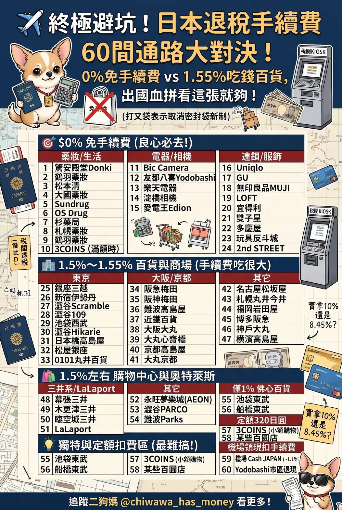

盛欣網絡科技有限公司
大阪五日員旅隨身指南
🗺️ 關西在地 3D 互動地理地圖沙盒
整合日本國土地理院官方圖資、高解析衛星地貌與在地實拍照片，直覺操控 3D 俯視視角，無縫切換 Plan A/B/C 與五日全景路線！
🏨 住宿全選項性價比評估庫（可勾選試算）
動態精算台中首班高鐵 0583 次（06:25 發車 ➔ 07:30 抵達左營）。但 AK170 也是 07:30 準時電腦鎖櫃截止報到，左營到小港飆車需 25 分鐘，100% 趕不上！因此 2026 年 11 月 24 日（星期二）前一晚必須在高雄過夜，以確保 2026 年 11 月 25 日（星期三）清晨準時抵達小港機場。
以下彙整 7 大住宿候選方案（涵蓋巨蛋商圈、小港機場旁、捷運站青旅與單人浴場）。請在下方勾選您想比較的項目，系統會即時在最下方產出「總成本與性價比對照卡」！
📊 勾選項目的即時性價比排行對照表
已勾選 2 項| 飯店名稱 | 區域 | 房價 | 交通費 | 總花費 | 起床時間 | CP評分 |
|---|
🚄 回程返台交通攻略：11/29（週日）小港機場 ➔ 回台中高鐵最佳車次精算
週日收假指南• 16:00：亞洲航空 AK171 準時降落高雄小港機場。
• 16:00 - 16:45：停靠滑行、下機、自動通關、提領行李與大件電器（需等候 20~30 分鐘）。
• 16:55 - 17:30：出關走地下道搭乘高雄捷運紅線（小港機場 R4 ➔ 高鐵左營 R16），28 分鐘直達（完全無塞車風險）。
• 17:35 - 17:45：搭手扶梯上 2F 高鐵驗票大廳，抵達月台時間約 17:40 左右。
| 推薦車次 | 左營發車 | 抵達台中 | 行車時間 | 推薦理由與特色 |
|---|---|---|---|---|
| 1250 次 👑 首選最穩 | 18:15 | 19:06 | 51 分鐘 | 降落後留有 2 小時 15 分 極度充裕緩衝，等行李或上洗手間完全不用奔跑趕車！ |
| 0676 次 | 18:35 | 19:30 | 55 分鐘 | 留有 2 小時 35 分 緩衝，即使行李慢出來也完全不慌不忙。 |
| 0152 次 ⚡ 42分飆速直達 | 18:55 | 19:37 | 僅 42 分鐘 | 只停台南與台中！17:40 抵達左營後可先在左營高鐵商場悠閒吃晚餐，再搭直達車神速回台中！ |
1. 提前 28 天訂票：週日傍晚是全台收假大尖峰，建議 11/01 起優先預訂 18:15 或 18:35 對號座。
2. 提早出關可免費改早：若提早抵達左營站（如 17:35 到），可在手機 App 或櫃檯免費改早一班（如 17:55），或直接搭自由座提早出發（左營是起站，排隊一定有座位）！
3. 延誤免驚：萬一班機延誤錯過原班次，當日車票可直接臨櫃改簽當天其他班次，不會作廢。
📊 第 4 天：2026 年 11 月 28 日（星期六）全日自由活動大圖專區
清晰放大版🌅 Day 4 晨間神級加碼：木津市場海鮮盛宴 ➔ 難波八阪神社大獅子殿開運（08:00 - 10:15）
11/28（週六）正好逢木津市場每月定期舉辦的「木津早市」！海鮮、生魚片、草莓哈密瓜批發價直接開嗑，價格痛擊觀光黑門市場！吃飽後散步 6 分鐘直達「難波八阪神社」，在 12 米高金牙大獅子前吸除所有厄運、祈求 2027 業績必勝！10:15 走回難波站，剛好與全團無縫會合啟動全日主行程！
心齋橋飯店出發 ➔ 御堂筋線搭 2 站至「大國町站」
心齋橋站刷 ICOCA 乘御堂筋線（車程 4 分鐘），大國町站 1 號出口出站，步行 3 分鐘即達木津市場。
木津市場海鮮盛宴 ＆ 當季日本三色草莓品嚐
品嚐魚市食堂厚切海鮮丼、烤鰻魚串或現剖生蠔，小林商店入手奈良「古都華・淡雪」草莓回房享用！
難波八阪神社參拜 ＆ 巨大獅子殿合影祈福
站在高達 12 米的巨型獅子口前拍照打卡，投 300 円求取「一年安鯛」吉籤，吸走壞運迎向好彩頭！
抵達難波站樞紐 ➔ 無縫接軌全日主線（Plan A / B / C）！
10:15 兩手空空、肚子飽滿、滿面春風！剛好在難波站搭乘御堂筋線/中央線，從容啟動全日自由行！
🏯 Plan A+：古城下町・金運開運・百萬夜景「達人旗艦究極線」
一條龍串接「木津早市海鮮 ➔ 八阪神社金牙獅子 ➔ 大阪城古城與金箔御座船 ➔ 狸狸亭大阪燒 ➔ 今昔館 ➔ 天神橋筋商街 ➔ 大阪天滿宮 ➔ ★燒肉力丸心齋橋店（17:30 全員10人本格燒肉盛宴）➔ 難波電器大血拼 ➔ 阿倍野 HARUKAS 300 百萬夜景 ➔ 心齋橋散策」！動線完全沿著地鐵谷町線與御堂筋線直線巡航，0 繞路、0 折返，吃喝玩樂、祈福血拼全部滿分！
1. 木津市場頂級海鮮早餐 ➔ 難波八阪神社巨型獅子殿開運
週六早市限定！大國町站 1 號出口直達「木津市場」，品嚐魚市食堂厚切海鮮丼、買小林商店古都華草莓；吃飽散步 6 分鐘直達「難波八阪神社」，朝聖 12 米金牙大獅子殿吸走厄運求勝運！
2. 大阪城天守閣 ＆ 大阪城公園 ＋ ★加碼：金箔御座船（護城河巡航）
登天守閣俯瞰大阪全景，欣賞雄偉護城石垣與古城秋景；極樂橋旁搭乘貼滿金箔的「大阪城御座船」巡航 20 分鐘，從水面上仰望古城壯觀視角與防邪人面石！
3. 鉄板焼きとお好み焼き 狸狸亭（天滿橋OMMビル店）
大阪在地人狂推的隱藏版鐵板燒！圍著滾燙鐵板現點現煎，外酥內嫩高麗菜甜脆，大口享受最正宗的大阪燒、螢烏賊燒、梅肉豬肉豚平燒與特製海鮮炒麵，徹底補充體力！
4. 大阪生活今昔館（くらしの今昔館）
天神橋筋六丁目站直結大樓 8 樓！室內江戶時代老街實景等比例造景，日夜燈光投影體驗昔日大阪庶民日常與節慶風貌。
5. 天神橋筋商店街（日本最長 2.6 公里）➔ ★加碼：大阪天滿宮 ＆ 中村屋炸可樂餅
全覆蓋拱頂雨棚免日曬雨淋！沿街一路往南逛到二丁目，參拜關西最負盛名之學問、事業與升遷之神「大阪天滿宮」（高管求事業晉升必拜），並在正門牌樓旁品嚐名物傳奇「中村屋現炸可樂餅」（熱騰騰酥脆一個僅約 100 円）！
6. 燒肉力丸 心齋橋店（日式本格炭火燒肉盛宴）
👑 盛欣全員 10 位大聚餐極上炭火燒肉放題體驗：心齋橋核心地段高評價名店！主打職人冷藏直送牛肉、特選厚切牛舌、極上牛小排與橫膈膜，桌邊炭火現烤香氣四溢。結束天神橋筋漫遊後，全員集結心齋橋大啖燒肉補充戰力，走路 3 分鐘即達心齋橋筋商店街與道頓堀運河！
7. Bic Camera 難波旗艦店 / EDION 旗艦店 / 心齋橋筋商圈（吃飽散步即達）
電器大採購：享受免稅 10% + 折 7%（實付 83 折）！採買吹風機、象印電鍋、相機、刮鬍刀，結帳後大紙箱直接在門口跳上計程車 3 分鐘直接載到心齋橋飯店門口放回房間床頭，兩手空空出發看夜景！
8. 阿倍野 HARUKAS 300 展望台（日本第一高樓 300 米高空夜景）
直上 300 公尺之巔！360 度環景巨型落地玻璃，俯瞰通天閣、大阪灣日落餘暉與神戶百萬繁星璀璨夜景，震撼度與浪漫氛圍完勝晴空塔！
9. 道頓堀運河散策 ＆ 心齋橋 一蘭拉麵
兩手空空漫步道頓堀運河與固力果跑跑人霓虹招牌！若宵夜還想暖胃，可在招牌「味集中隔間」內客製化享用濃厚豚骨拉麵，深夜時段避開白天的觀光大長龍，為充實的一天畫下完美句點！
▼ Plan A 專屬高清清晰大圖（點擊可原圖放大）

🦈 Plan B：港灣海景・日落溫泉線
風景與前三天的京都寺廟截然不同（看巨型鯨鯊＋出海帆船＋露天溫泉放鬆），但 11 月底海風偏強需穿厚外套；原簡報中的黑門市場下午 17:00 陸續收攤，請略過直接去難波電器街！
1. 海遊館（世界級大型水族館）
超震撼 9 米巨大水槽近距離看鯨鯊悠游、企鵝海豹，視覺療癒效果極強。
2. 天保山觀光船「聖瑪利亞號」+ 午餐
搭乘仿哥倫布旗艦雙桅帆船出海巡航 45 分鐘，飽覽大阪港海景與跨海大橋。
3. 咲州宇宙展望台（大阪府咲洲廳舍）
西日本頂級高空景觀，360 度玻璃帷幕俯瞰大阪灣與明石海峽大橋日落。
4. 天然露天溫泉住之江
森林庭園露天風呂、壺湯、三溫暖，徹底洗去前三天跟團健行積累的疲憊！
5. 難波電器街 + 新世界通天閣夜景串炸
EDION / Bic Camera 難波店採買，順道造訪通天閣巨型看板吃道地炸串。
▼ Plan B 專屬高清清晰大圖（點擊可原圖放大）

🍁 Plan C：箕面秋楓・勝運達摩不倒翁秘境線
如果您前三天看夠了市區熱鬧，想徹底擁抱「關西秋季紅葉全盛期」與古剎靈氣，這條北攝秘境路線是唯一解答！探訪 1300 年歷史古寺「勝尾寺」，滿山遍野擺滿數萬尊祈求生意興隆與戰勝自我考驗的「必勝達摩不倒翁」，再沿著「箕面大瀑布」芬多精步道散策，身心靈徹底淨化！
1. 心齋橋出發 ➔ 御堂筋線直通「千里中央站」➔ 阪急巴士至勝尾寺
心齋橋站搭御堂筋線（直通北大阪急行線）約 25 分鐘直達「千里中央站」，轉乘阪急巴士特急 29 號約 35 分鐘，直達勝尾寺山門正門口。
2. 勝尾寺：淨化之橋水煙、千座達摩不倒翁奉納所、求勝運
• 越過噴灑仙境薄霧的「淨化之橋」驅除厄運，步入八萬坪宏偉古寺。
• 祈願達摩奉納架：在授予所挑選專屬達摩，在背後寫下年度目標，親手為達摩畫上右眼祈求勝運！
• 收藏特色「小達摩御神籤」與紅葉限定御朱印。
3. 日本百大名瀑【箕面大瀑布】森林散策 ＆ 品嚐酥脆「炸楓葉」
落差達 33 米的壯觀飛瀑在四周染紅的楓林中傾瀉而下，負離子能量爆發！漫步沿途百年老街，必吃當地特產「油炸真楓葉酥餅（もみじの天ぷら）」，香脆甜美超涮嘴。
4. 回抵梅田商圈：梅田 Yodobashi / 難波 Bic Camera 採購黃金檔
電車直達梅田核心！直接進攻全日本規模最大的梅田 Yodobashi 電器城，買完吹風機、保溫杯與大件伴手禮後，搭御堂筋線輕鬆返回心齋橋飯店放好戰利品！
🌃 高空景觀地理校正 ＆ 🍜 心齋橋深夜拉麵神殿
🗺️ 盛欣網絡 2026 大阪五日官方行程（全景圖文版）
官方原檔• 協辦旅行社：旅天下聯合國際旅行社 ｜ 專案業務：簡佑庭（電話：`02-7701-0660#8502`）
• 集合時間：2026/11/25 (三) 清晨 06:30 小港國際航廈 3F 大廳集合報到
• 航班：去程 AK170 (08:30-12:40) ｜ 回程 AK171 (13:45-16:00)
高雄小港機場 ✈ 大阪關西海上空港 ➔ 世界遺產【清水寺】、二三年坂京風老街
帶著輕鬆心情集合於小港機場，辦理出境手續後搭乘客機直飛大阪關西空港。抵達後前往坐落在京都市東山區的音羽山【清水寺】（西元778年建），本堂被指定為日本國寶，舞台居高臨下四季景觀秀麗，漫步二、三年坂體驗濃郁江戶京風古街。


★米其林評鑑星級【伊根灣舟屋】遊覽船 ➔ 日本三景【天橋立】傘松公園纜車「升天之龍」
專車前往京都府北部伊根町，搭乘遊覽船周遊伊根灣，近距離觀察依山傍海的 230 間舟屋建築群；隨後前往日本三景【天橋立】，搭乘纜車登傘松公園，從兩腿之間倒過來看，沙洲宛如架在天上的飛龍橋樑，奇景令人難忘。


日本三大合掌村【美山町～茅葺之里】秘境 ➔ 免稅店 ➔ 難波～心齋橋～戎橋～道頓堀
造訪群山環抱的美山町合掌屋聚落（被譽為日本人心靈的故鄉），隨後前往免稅店，下午專車開抵大阪最熱鬧的難波與心齋橋商圈，自由散策在戎橋與道頓堀運河旁，欣賞巨大固力果跑跑人霓虹看板，品嚐道地大阪燒、章魚燒與拉麵。
⚡ 採購前移戰略：強烈建議「今晚（第 3 天 17:00-21:00）就先買齊電器」！
老手神操作當天下午 16:30 抵達心齋橋飯店後「全團自由解散、晚餐自理」，到晚上 21:00 電器行打烊有整整 4.5 個小時，時間非常充裕！
• 16:30 抵達心齋橋飯店，辦理入住、大行李放進房間。
• 17:00 - 19:30 步行 6~8 分鐘直奔 Bic Camera 難波店 / EDION 旗艦店，專心比價採買大件電器（電鍋、吹風機、刮鬍刀）。
• 19:30 - 20:00 結帳後大紙箱直接在門口跳上計程車 3 分鐘（基本車資約 700 円，折台幣 150 元），司機直接載到飯店門口放回房間床頭！
• 20:00 之後 兩手空空極度輕鬆！宵夜推薦步行 6 分鐘直奔運河旁【一蘭拉麵 道頓堀店】享用豚骨拉麵，順道逛松本清與 24H 唐吉訶德！
• 第 4 天（自由活動） 整天徹底大解放！兩手空空一身輕裝暢遊 Plan A 或 Plan B，完全不用掛念扛電器！


大阪全日自由活動 ➔ 傍晚 17:00 難波/梅田電器與伴手禮大採購
全日無團體拘束！晨型人可自由選修【木津市場海鮮早市 ➔ 難波八阪神社大獅子殿】，日間可依喜好選擇 Plan A（古城文藝＋狸狸亭大阪燒）、Plan B（港灣海景＋住之江露天風呂） 或新增之 Plan C（箕面勝尾寺滿山不倒翁賞楓）！夜間亦可登上【阿倍野 HARUKAS 300】飽覽無敵高空夜景。傍晚銜接 Bic Camera 難波旗艦店或梅田 Yodobashi 大買電器！
🏨 住宿：續住大阪市區飯店（心齋橋 Grand Hotel 或同級）
一條龍串接木津早市海鮮 ➔ 八阪神社金牙獅子 ➔ 大阪城古城與金箔御座船 ➔ 狸狸亭大阪燒 ➔ 今昔館 ➔ 天神橋筋商街 ➔ 大阪天滿宮 ➔ ★燒肉力丸心齋橋店（17:30 10人本格燒肉盛宴）➔ 難波電器大血拼 ➔ 阿倍野 HARUKAS 300 百萬夜景 ➔ 心齋橋道頓堀散策，全天動線直結不走回頭路！
大阪關西海上空港 ✈ 高雄小港機場（平安賦歸）
早餐後整理行囊，專車接駁前往大阪關西海上空港，辦理登機與免稅品託運手續，搭乘客機（AK171 13:45-16:00）返回高雄小港機場，圓滿結束充實難忘的大阪五日之旅。
🛒 日本必買全品類省錢全鑑（台日價差最高優先）
省錢排行榜🧮 現場購物即時換算機（日幣 ➔ 台幣）
現場血拼必備在 Bic Camera 或藥妝店看到日幣標價？輸入未稅或含稅日幣金額，一鍵自動扣除 免稅 10% 與 7% 折價券，秒算折合台幣實付金額！
✈️ 終極避坑！日本退稅手續費 60 間通路大對決（0% 免手續費 vs 1.55% 吃錢百貨）
出國血拼看這張就夠各大百貨與部分 Outlet 會巧立名目收取 1.5%～1.55%「退稅手續費」。買 10 萬日幣等於現虧 1,550 円手續費！
• 藥妝/生活：驚安殿堂 Donki、松本清、鶴羽藥妝、大國藥妝、Sundrug、OS Drug、杉藥局
• 連鎖/服飾：Uniqlo、GU、無印良品 MUJI、LOFT、宜得利、多慶屋
• 商場與 Outlet：難波 Parks、LaLaport、臨空城三井 Outlet、永旺夢樂城 (AEON)

🎯 採購最佳時機推薦：可以在「第 3 天晚上：2026 年 11 月 27 日（星期五 17:00-21:00）」搶先去買嗎？時間來的及嗎？
絕對來的及 ★ 大推！
答案：完全來的及！而且強烈推薦「前一天（第 3 天 11/27 週五夜）先去買」！
第 3 天下午 16:30 抵達心齋橋飯店後全團自由活動解散，至電器行 21:00 打烊有整整 4.5 小時。這是日本旅遊老手一致公認的最高段安排：
大件家電與重物已在昨晚買好放房間，第 4 天 100% 兩手空空一身輕，暢遊大阪城或海遊館！
心齋橋連住兩晚！Bic Camera 結帳後跳上計程車 3 分鐘（約 150 台幣）直達飯店放房間，零搬運痛苦。
熱門型號當晚若缺貨，店員可從倉庫調貨，第 4 天下午去取貨即可，完全不怕撲空沒買到。
買完電器直接在道頓堀吃拉麵燒肉、逛松本清與 24H 唐吉訶德，越夜越精彩！
• 匯率基準以 1 JPY ≈ 0.21 TWD 計算。
• 日本價格已計入 免稅 10% + 搭配信用卡/折價券 7%（約 83 折） 的實付換算價。
• 排序規則：各類別均按「節省台幣金額最高者」由高到低嚴格排列！
⚡ 一、小家電與 3C 數位（價差最大類別）
最高狂省 NT$ 25,000+| 商品名稱 / 型號 | 台灣售價 | 日本退稅折算 | 價差（省多少錢） |
|---|---|---|---|
| 象印 頂級炎舞炊煮壓力IH電子鍋 NW-FA10 / 頂級 5.5合 |
NT$ 39,900 | 約 68,000円 (約 NT$ 14,280) |
現省 NT$ 25,620 (省 64% ｜ 相當於3.6折) |
| 百靈 Braun 9系列頂級電鬍刀 9577cc / 含自動清潔座 |
NT$ 23,888 | 約 42,000円 (約 NT$ 8,820) |
現省 NT$ 15,068 (省 63% ｜ 相當於3.7折) |
| Dyson Supersonic Nural 吹風機 HD16 / 智能溫控版 |
NT$ 14,600 | 約 44,000円 (約 NT$ 9,240) |
現省 NT$ 5,360 (省 37% ｜ 現省五千多) |
| Panasonic 旗艦奈米水離子吹風機 EH-NA0J / EH-NC50 |
NT$ 10,900 | 約 32,000円 (約 NT$ 6,720) |
現省 NT$ 4,180 (省 38% ｜ 幾乎半價) |
| 任天堂 Switch OLED 主機 日版全區主機 |
NT$ 10,480 | 約 34,500円 (約 NT$ 7,245) |
現省 NT$ 3,235 (省 31% ｜ 遊戲迷必買) |
🏔️ 二、戶外登山裝備與日本名牌（台灣買直接被貴一倍）
mont-bell / BAO BAO 必搶| 品牌與款式 | 台灣售價 | 日本退稅折算 | 價差（省多少錢） |
|---|---|---|---|
| 三宅一生 ISSEY MIYAKE BAO BAO LUCENT 經典 6格托特包 |
NT$ 15,800 | 約 44,000円 (約 NT$ 9,240) |
現省 NT$ 6,560 (省 42% ｜ 專櫃必排神包) |
| The North Face 北面紫標 (Purple Label) 日線限定 山系防風連帽外套 |
NT$ 12,800 (代購行情) |
約 35,000円 (約 NT$ 7,350) |
現省 NT$ 5,450 (省 43% ｜ 台灣無專櫃) |
| mont-bell Plasma 1000 頂級極輕羽絨衣 1000FP 超輕量保暖神物 |
NT$ 10,500 | 約 26,000円 (約 NT$ 5,460) |
現省 NT$ 5,040 (省 48% ｜ 幾乎半價買到) |
| Onitsuka Tiger 鬼塚虎休閒鞋 Mexico 66 經典紅白藍線條 |
NT$ 3,880 | 約 12,000円 (約 NT$ 2,520) |
現省 NT$ 1,360 (省 35% ｜ 舒服百搭) |
💊 三、家庭常備醫藥與保健食品（行李箱必塞）
量大價差累積超驚人| 商品名稱 / 規格 | 台灣售價 | 日本退稅折算 | 價差（省多少錢） |
|---|---|---|---|
| 合利他命 EX Plus 強效錠 大瓶 270 錠 / 舒緩眼睛肩頸酸痛 |
NT$ 2,150 | 約 4,980円 (約 NT$ 1,045) |
現省 NT$ 1,105 (省 51% ｜ 買一瓶抵台灣兩瓶) |
| 若元錠 Wakamoto 腸胃錠 家庭號 1,000 錠 |
NT$ 880 | 約 1,880円 (約 NT$ 395) |
現省 NT$ 485 (省 55% ｜ 現省超過半價) |
| 新表飛鳴 S 錠 (Biofermin) 大容量 540 錠 |
NT$ 890 | 約 2,100円 (約 NT$ 441) |
現省 NT$ 449 (省 50% ｜ 半價入手) |
| 大正百保能黃金微粒感冒藥 微粒金色 44 包入 |
NT$ 520 (代購配方) |
約 1,280円 (約 NT$ 269) |
現省 NT$ 251 (省 48% ｜ 日本原版配方) |
| EVE QUICK 止痛藥 (頭痛生理痛) 40 錠入 |
NT$ 380 (代購行情) |
約 680円 (約 NT$ 143) |
現省 NT$ 237 (省 62% ｜ 藥妝店必掃) |
🥃 四、威士忌與日本清酒（酒友神級省錢）
台灣溢價炒作嚴重| 酒款名稱 | 台灣行情 | 日本免稅換算 | 價差（省多少錢） |
|---|---|---|---|
| 三得利 山崎 12年 單一麥芽威士忌 700ml / 國際炒作神酒 |
NT$ 7,200 | 約 16,500円 (約 NT$ 3,465) |
現省 NT$ 3,735 (省 52% ｜ 看到原價秒結帳) |
| 三得利 響 (JAPANESE HARMONY) 700ml / 調和威士忌經典 |
NT$ 4,600 | 約 10,500円 (約 NT$ 2,205) |
現省 NT$ 2,395 (省 52% ｜ 送長官大氣) |
| 獺祭 磨之先 (二割三分) 純米大吟釀 720ml / 頂級清酒代表 |
NT$ 2,650 | 約 5,800円 (約 NT$ 1,218) |
現省 NT$ 1,432 (省 54% ｜ 機場免稅必拿) |
🍫 五、機場伴手禮與零食（辦公室分送神器）
機場免稅店回程一次掃齊| 伴手禮品名 | 台灣進口售價 | 關西機場免稅價 | 價差（省多少錢） |
|---|---|---|---|
| ROYCE' 生巧克力 (牛奶/黑巧/苦味) 20 粒盒裝 / 附保冷袋 |
NT$ 560 | 800円 (約 NT$ 168) |
現省 NT$ 392 (省 70% ｜ 台灣3折買到) |
| 福砂屋 長崎蛋糕 (0.6 號) 底部粗砂糖粒經典款 |
NT$ 620 (快閃店價格) |
1,100円 (約 NT$ 231) |
現省 NT$ 389 (省 63% ｜ 極度搶手) |
| 白い恋人 (白色戀人 18 枚入) 白巧克力夾心餅乾 |
NT$ 580 | 1,320円 (約 NT$ 277) |
現省 NT$ 303 (省 52% ｜ 經典不敗) |
| 薯條三兄弟 (10 袋入) 北海道酥脆鹹香薯條 |
NT$ 420 | 1,050円 (約 NT$ 220) |
現省 NT$ 200 (省 48% ｜ 送禮自用皆宜) |
❄️ 11 月底關西氣溫穿著 ＆ 出國必帶清單
行前必讀🌡️ 11/25 - 11/29 關西氣候與體感分析：
• 京都／山區海邊（伊根舟屋、天橋立、美山町）：氣溫約 5°C ～ 13°C。伊根灣搭船與天橋立山頂海風刺骨，體感逼近 0~3°C！務必攜帶防風保暖連帽厚外套、圍巾、手套與暖暖包。
• 大阪市區（心齋橋、難波）：氣溫約 9°C ～ 16°C。早晚偏冷、白天室內與地鐵車廂暖氣強勁，強烈建議「洋蔥式穿法」（發熱衣 + 易穿脫中層 + 防風防寒大衣），方便穿脫。
🎒 出國必帶重要物品清單（出發前打勾核對）：
• 非處方西藥（如合利他命、若元錠）：每種最多 12 瓶（盒），合計不超過 36 瓶（盒）。
• 酒類免稅額度：年滿 18 歲每人可攜帶 免稅酒類 1 公升（1,000ml）（威士忌一瓶多為 700ml）。
• 肉類製品嚴禁攜帶：任何含豬肉、牛肉成分之生熟肉、香腸、肉乾、含肉泡麵嚴禁帶回台灣（違者重罰 20 萬元起）！
📱 日本自由行必備實用 App
旅行神隊友1. Google Maps
日本大眾運輸換乘、步行導航準確度 100%，會精確顯示月台編號與出口名稱。
2. 乘換案內（乗換案内）
查詢地鐵發車時刻表與轉乘最佳車廂，避免在複雜車站迷路走冤枉路。
3. Tabelog（食べログ）
日本在地人美食權威評分，只要分數超過 3.5 分以上皆為保證好吃的神級名店。
4. Visit Japan Web
出發前上網填寫入境查驗與海關申報，入境直接刷 QR Code 走電子走道快速通關。